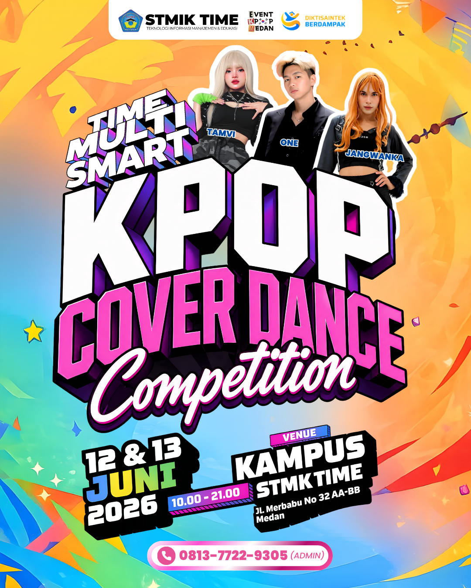
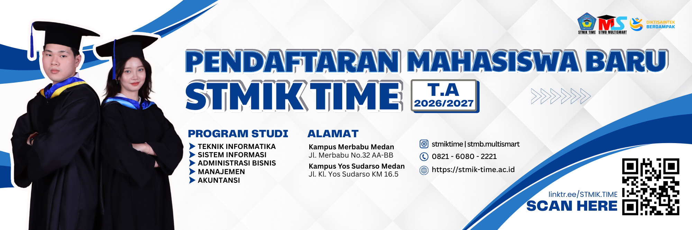

Creative Multimedia Gita Audry
Saya memiliki ketertarikan terhadap dunia desain, multimedia, dan perkembangan digital.
Melalui desain grafis dan pembuatan konten, saya dapat menuangkan berbagai ide dan kreativitas ke dalam bentuk visual.
Berikut merupakan beberapa hasil desain dan multimedia yang saya buat.
Hasil Design Saya




Musik Favorit Saya
Dengarkan Musik Favorit Saya :